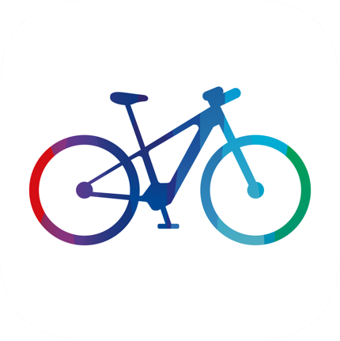
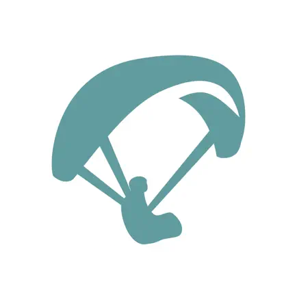
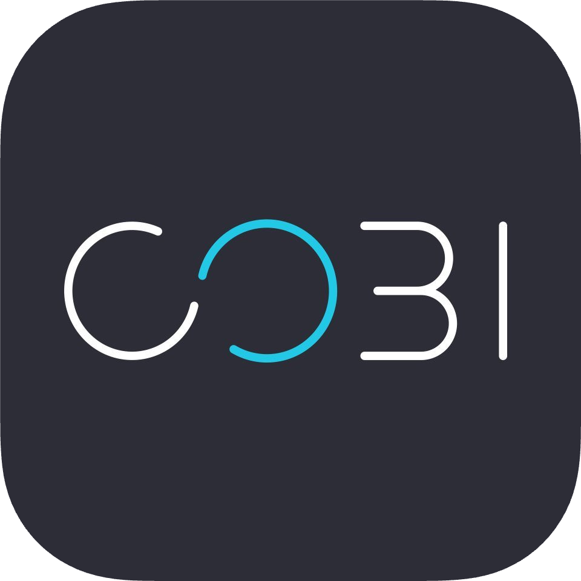

Software Development
Simon Seyer
Senior iOS Dev & Software Architect
I'm a passionate iOS developer with a strong focus on user experience, a collaborative sofware architect that makes software engineering scale across big teams and love to apply me experience as product owner and team lead.
Having worked in a variety of roles, I see software projects from many angles and can help you to make them successful → Hire me as a freelancer
Away from the computer I love to do Paragliding, Cycling, Travel the world, and capturing it with my Camera. After a five month trip through South America I'm now living in the Alps.
Mindset
I'm looking to work with companies that act Socially responsible and have a positive impact on People and the Environment.
As iOS developer
I am passionate about user centric design with privacy in mind.
Code needs to be easy to understand, maintainable and well-tested. Most importantly, it needs to work for the users and the business.
As software architect
I bring people, business, product and technology together.
In my career, I have learned how important it is to have a shared understanding of what to build, and how. Software architecture plays a key role in that.
As dev lead
I serve my team so they are happy, enganged and productive.
People are the biggest asset of every company and helping them grow is my motivation.
Skills
iOS Development
With many years of experience, I have a deep knowledge of iOS development practices and frameworks. In collaboration with UX designers I've implemented a variety of UI interfaces, from stock to custom.
I've designed and implemented countless features, many deeply integrating with the OS and backend services. I was also regularly involved in building foundational frameworks for internal use.
IoT & Bluetooth
In close collaboration with embedded developers, I've designed and implemented multiple binary protocols for Bluetooth communication, transparently transmitting high frequency data via a message bus across multiple platforms (Embedded C, iOS, Android & JavaScript) and enabling transfers of large data like firmware updates.
I've also got multiple years of experience working with the iOS CoreBlueooth stack, solving a lot of intracte problems to enable a seamless and fast experience when interacting with IoT devices.
Software Architecture
I've designed and implemented app architectures at all scales. From enabling quick iteration in a feature rich iOS App developed by a three-person StartUp team (me included) to collaboratively crafting a modular architecture from scratch that enabled more than a handfull of domain-teams working on an Android and iOS app largely in autonomony.
As system architect, I closely worked together with embedded and backend architects and many teams to create a coherent overall architecture. This gave me many insights and allows me to have a very holistic approach to architecture.
To improve shared understanding and drive communication protocols as well as privacy measures, I've developed domain specific languages to describe domains that became one of the most central piece of technology at Bosch eBike.
Technical Leadership
As technical product owner of a team of six, I was covering the roles as team lead, technical owner and product manager. I was responsible for setting the agenda, aligning it with other teams, overall product management and the system architecture (in my dual-role as system architect).
Most important for me was to have a happy and productive team. For that, we did regular retrospectives and I decided to do personal one on one meetings with all team members every one or two weeks. In collaboration with the disciplinary manager I also ran the yearly goal setting meetings.
CI/CD
From a simple iOS app deployment pipeline to a complex mobile testing and delivery systems including large and modular projects, complex versioning, multiple deployment levels and requirements like open source scanning, I've designed and managed a number of system as developer as well as team lead.
This enabled teams to move fast without breaking things, provided quick feedback, enabled regular releases and ensured transparency (for efficiency as well as compliance reasons). At some point dozens of developers relied on the system for daily work.
Privacy Engineering
Privacy needs to be by design. In my role as system architect, in constant collaboration with the legal team, I've designed systems that minimised data usage and designed sophisticated ways to make data flows transparent and controllable. This was not only to the benefit of the user but also gave us more legal confidence (e.g. GDPR compliance) and limited manual processes.
I also designed multiple high level security mechanisms to control access and ensure authenticity, mostly utilising asymmetric cryptography, that were validated by security experts.
Projects

Flow App (Bosch eBike)
The Flow app is at the center of the smart system generation of Bosch eBike. eBike configuration and maintenance, component firmware updates, lock & alarm, route planning and navigation, ride screen with fitness sensors, activity tracking, 3rd party integrations and more. Well designed and available in many languages, it is very popular with its users.
I was able to play a significant role in the development of the Bosch eBike 'smart system' generation from the very beginning. Together with the most experienced software architects at Bosch eBike, I laid the technical foundations for the interaction of the hardware and software components. I was able to use my experience in digital product development, Bluetooth, communication protocols and data models.
At the same time, as a system architect at eBike Digital, I had the main technical responsibility for the development of the Flow App for iOS and Android. With developers from three locations, I started the project from scratch, defined the framework for the software development, made important technology decisions collaboratively and created the architectural basis for the parallel development of the app across more than a handful of mobile development teams.
In collaboration with the other system architects, I significantly shaped the technological and architectural landscape of Bosch eBike over the years. Especially in data modelling and automated data privacy processes.
In 2021, I was allowed to take over a team as technical product owner and team lead. As a mobile platform team, we created an important technical platform to enable the effective product development of the other teams in the first place. In 2022, the team is more than recognised and creates some of eBike Digital's most important assets.
In the team, I was responsible for planning the project and representing it to other teams and management. I established an effective Kanban work mode, which was also adopted by other teams. In weekly coaching sessions with the team members, I ensured their well-being and development and supported official goal-setting meetings.
I was also involved in the application process and was on my way to officially taking on leadership responsibilities at Bosch.

Paraquip App (Me)
Paraquip is an iOS app for paragliding pilots to manage their equipment. It tracks the check history and notifies about upcoming checks. For safety and performance, it calculates wing loading.
I'm the designer and developer of the app. It's under active development and available on the AppStore and open source on GitHub.

COBI App (COBI.Bike)
COBI.Bike is turning every bike into a connected one. The Bluetooth enabled bike accessory sits on the handlebar, charges the phone, allows to control the app via thumb controller and interconnects with the eBike system (if available).
The heart of COBI are the mobile apps. Riding dashboard, navigation, fitness tracking (including data from BLE sensors & Apple Watch), HealthKit, Strava & Komoot integration, music and call controls, and much more.
I've joined the COBI Start Up as student intern and later took over as development iOS lead and architect. I worked on basically all parts of the app, from the highly custom and lovely animated user interface, over mapping and navigation, the many iOS and 3rd party integrations to the extensive Bluetooth communication.
Find out more on the product page and the AppStore.